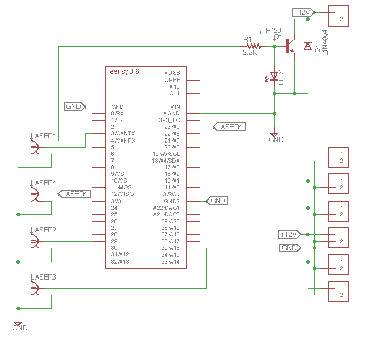

6 Electrical

Unplug all power before any electrical work on the PAS or opening the control box!
A genralized diagram of the PAS electrical system is shown below. Some components, such as photodiodes and the microphone, may require external power supplies, but the majority of the components are powered directly via the PAS control box.

The heart of the PAS electrical system is the Teensy 3.6 (PJRC.com) microcontroller that resides on the MultiPAS control board. The Teensy communicates with the software to control the modulation of the lasers and switch the background valve on and off. The same board distributes 12 V power to the system. The MultiPAS control board may be used with both 3- and 4-wavelength versions of the PAS. Three-wavelength versions may have a Teensy 3.2 instead of the 3.6 shown on the schematic; these are, however, mostly drop-in compatible.
